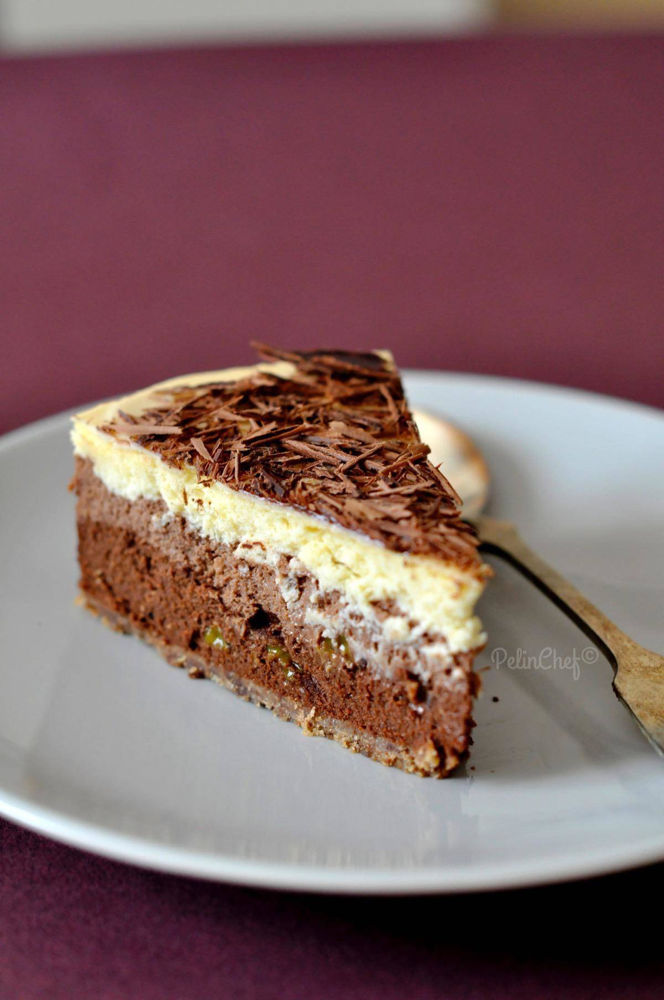

Çikolatalı Cheesecake Tarifi İçin Malzemeler
- 2 paket yulaflı bisküvi
- 50 gr tereyağı
- 300 gram labne peyniri
- 1 su bardağı süzme yoğurt
- 3 yumurta
- 1 su bardağı pudra şekeri
- 1 paket vanilya
- Çikolata sosu
- 2,5 su bardağı süt
Çikolatalı Cheesecake Tarifi
- Yulaflı bisküvileri rondoda toz haline getiriyoruz.
- Tereyağını eritip üzerine ekleyip tekrar geçiriyoruz.
- Kelepçeli kaba yaydırıp sıkıştırarak düzleştiriyoruz.
- En az yarım saat buzlukta donduruyoruz.
- Ara kısım için labne peynir ve pudra şekerini çırpıyoruz.
- Yoğurdu ilave edip 5 dakika daha çırpıyoruz.
- Yumurtaları birer dakika arayla ekleyip çırpmaya devam ediyoruz.
- Vanilyayı da ekleyip donmuş tabanın üstüne döküyoruz.
- Kek kalıbının altını alüminyum folyo ile sarıp 170 derece fırında 50 dakika pişiriyoruz.
- Pişince fırını aralayıp soğumasını bekliyoruz.
- Soğuduktan sonra üzerini streçleyip 8 saat kadar buzdolabına atıyoruz.
- 8 saat sonunda kelepçeyi çıkartıyoruz.
- Çikolata sosunu sütle pişirip üzerine döküp soğumasını bekliyoruz.